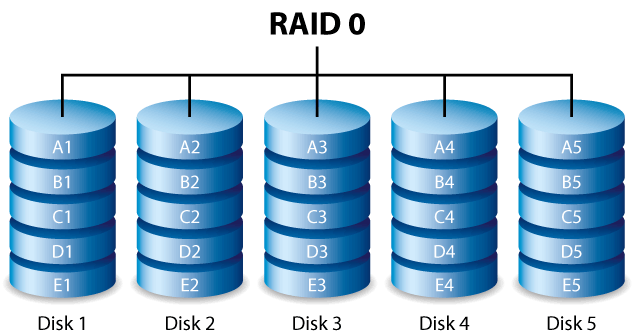
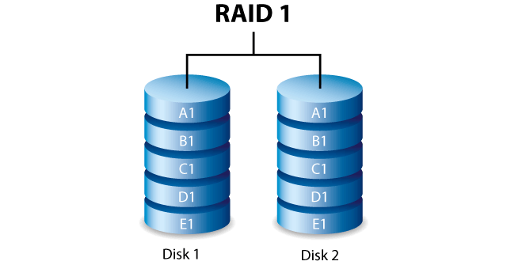
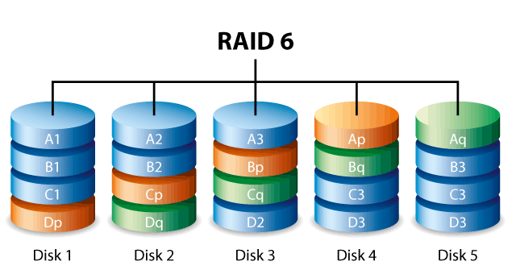
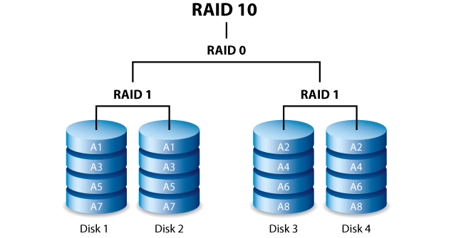

Storage
Table of Contents
1 RAID
- Redundant Array of Independent Disks (Redundant Array of Inexpensive Disks)
| 写 | 读 | 容量 | ||
|---|---|---|---|---|
| RAID 0 | striping, without mirroring or parity | N | N | N |
| RAID 1 | mirroring, without striping or parity | 1 | N | 1 |
| RAID 5 | block-level striping, with distributed parity | N-1 | N-1 | N-1 |
1.1 RAID 0

- 数据等分地写入所有磁盘
- 没有冗余，单个磁盘故障会造成全部数据无法读取
1.2 RAID 1

- 数据镜像地写入所有磁盘
1.3 RAID 5

- 一个磁盘存储数据的校验区块，数据等分地写入其他磁盘
- 单个磁盘故障不会造成数据丢失，但两个磁盘同时故障会造成所有数据丢失
- 性能接近 RAID 0，但提供冗余保护
1.4 RAID 6

1.5 RAID 10
